Robo Dojo is a game where you program bots to battle each other with home-brewed viruses (screenshot). Robo Dojo clones the 1998 game RoboCom.
In this situation, we flip a coin to decide which program moves ahead in the tournament.
Labels mark places in your program for jump and bjump instructions.
@foo
add #1, 1
jump @foo
bank main ; bank 1
bjump 4, @start
bank foo ; 2
bank bar ; 3
bank baz ; 4
create 1, 1, 1
@start
turn 1
bank main
@start
; Register #1 = "empty", or "opponent", or "friend"
scan #1
; if "opponent" goto @foe
; else goto @friend-or-empty
comp #1, 1
jump @friend-or-empty
jump @foe
@friend-or-empty
; if "friend" skip the follow create instruction
comp #1, 2
create 2,2,0
; Disinfect / initialize new bot
trans 1,1
trans 2,2
set %active, 1
turn 1
jump @start
@foe
; Transfer tapout-malware to the opponent
trans 2,1
; Make sure the opponent is active, so it can execute the foe bank
set %active, 1
jump @start
bank foe
tapout
Recall, Super Diamond and Bank Jumper defeat individual bots by infecting them with tapout malware:
bank foe
tapout
We are going to replace that payload with a simple virus:
bank foe
trans 1,1
turn 1
Here’s the complete program.
This virus spreads quickly because its execution time is small compared to the disinfection routine. Here are some snapshots of Prototype Virus 1 taking on Super Diamond: 1, 2, 3, 4, 5, 6, 7, 8,
Unfortunately, the virus is so effective it ends up infecting Blue’s bots at the frontier.
Furthermore, Prototype Virus 1 has no mechanism to tapout its opponent; it merely spreads a virus.
There are four editors, one for each color: blue, red, green, and yellow.
The blue editor edits the blue bot’s program, etc.
To select your editor, click the “Blue bot” drop down menu.

The trans instruction uploads one bank from one bot to another.
There are two parameters:
During the trans instruction’s last cycle, if the forward cell is occupied,
then the bot copies its Source bank into the forward bot’s Destination bank,
overwriting any bank that might already be there.
Thus trans 1,1 copies the main bank from parent to child.

For any given bot, at any given moment: the bot is either active or deactivated.
If a bot is active, then it will execute a cycle during its turn during the current step.
If a bot is deactivated, then it will not execute anything — until it becomes activated.
For a bot to become activated, its #active register must be set to 1 or
greater. Note: a bot cannot activate itself since it cannot execute. To
activate a deactivated bot, another but must set #active by using
Remote Access.
bank launcher ; 1
; LOOK HERE: jump to bank 3 to evade Super Diamond's attack
bjump 3,1
bank 2
bank main ; 3
@start
; Register #1 = "empty", or "opponent", or "friend"
scan #1
; if "opponent" goto @foe
; else goto @friend-or-empty
comp #1, 1
jump @friend-or-empty
jump @foe
@friend-or-empty
; if "friend" skip the follow create instruction
comp #1, 2
create 2,3,0
; LOOK HERE: Disinfect / initialize new bot
trans 1,1
trans 3,3
set %active, 1
turn 1
jump @start
@foe
set #2, 1
@foe-loop
comp #2, 51
jump @foe-infect
; end of loop
jump @start
@foe-infect
trans 2, #2
set %active, 1
add #2, 1
scan #3
comp #3, 1
jump @start
jump @foe-loop
When executed, the tapout instruction causes the bot to exit the board.
When a parameter is local, that means that the value is stored inside the bot that is executing the instruction.
Local parameters begin with either # or $, or are an integer literal such as
5.
Parameters that begin with #
are writable.
Parameters that begin with $ are not writable — they are local constants.
-32768 … 32767 |
These are 16-bit integer literals. |
#active |
This is a special register: setting #active to 0 or negative deactivates the bot. |
$banks |
The number of banks in the local bot. |
$instrset |
The instruction set of the local bot. 0 signifies
the Basic instruction set; 1 signifies the
Advanced instruction
set; 2 signifies the Super instruction set. |
$mobile |
0 if the bot is immobile; 1
if the bot is mobile. |
$fields |
The number of rows on the board. |
Say the Robo Dojo result for a match is 0-2-5, but the RoboCom result is 0-0-7. We then wonder: “is it even possible for the second player to win in this match in Robo Com?”” In such situations, we go into overtime, which means retrying the match in RoboCom until either: (a) the second player scores a win (which definitely answers out question), or (b) the second player never scores a win and we reach a total of 14 matches.


Robo Dojo is a game where you program bots to battle each other with home-brewed viruses (screenshot). Robo Dojo clones the 1998 game RoboCom.
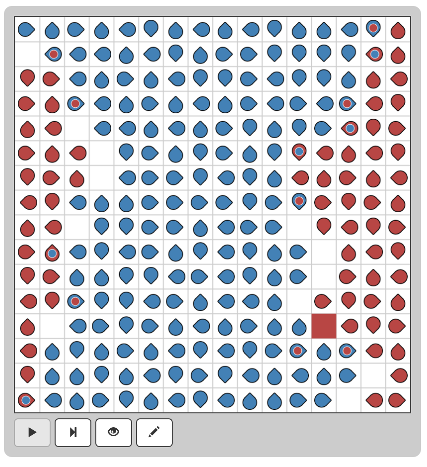
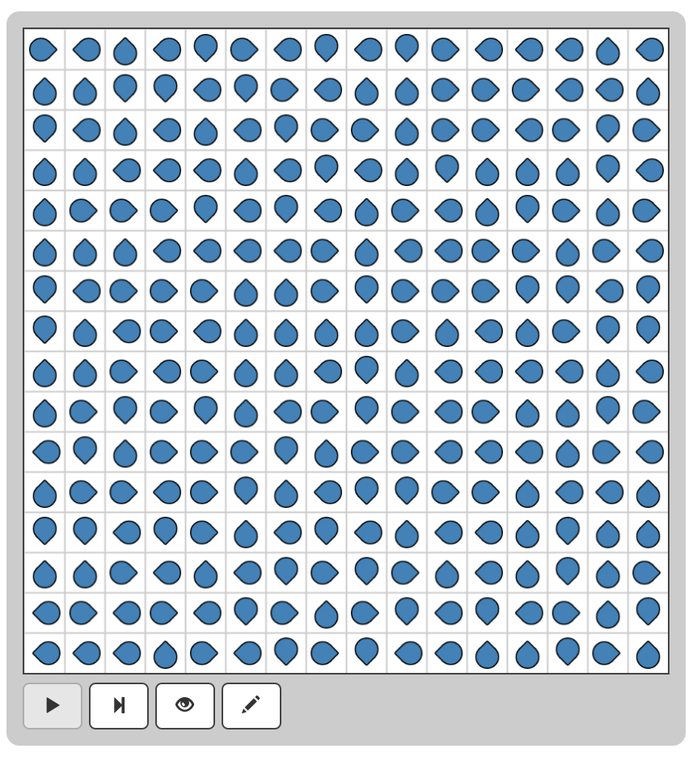
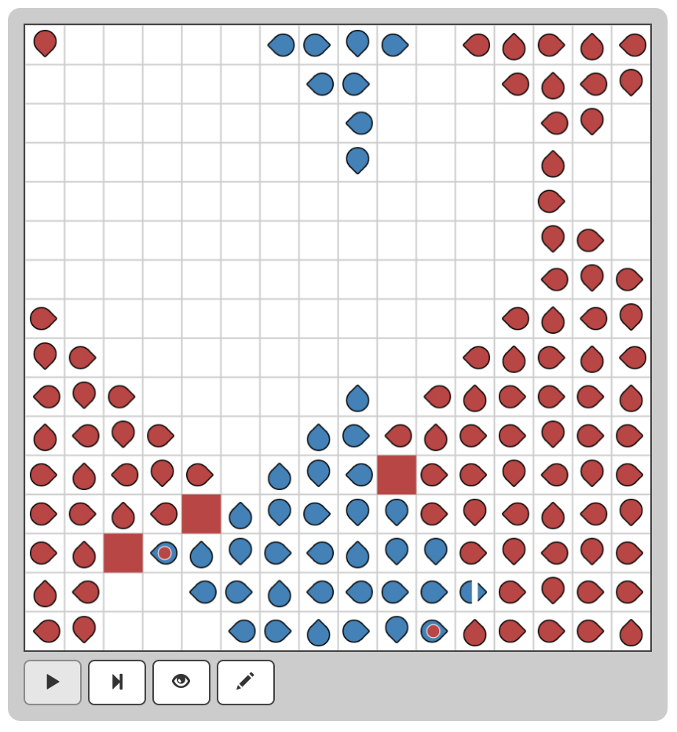 The red squares indicate a Red bot has just tapped out there.
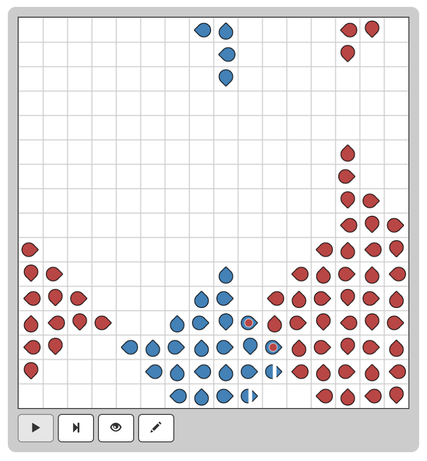
| Semantics | Sets the instruction pointer to bank bank, instruction instruction |
| Data types | bank and instruction can be any parameter. instruction can also be a label |
| Instruction set | Basic |
| Number of cycles | 5 |
| Runtime exceptions |
|
If a bot finds an empty first bank after an Auto Reboot, or upon activation for the first time, then the bot taps out from “Data Hunger.”
Bank Jumper modified to use virus instead of tapout
bank launcher ; 1
; jump to bank 3 to evade Super Diamond's attack
bjump 3,1
bank 2
bank main ; 3
@start
; Register #1 = "empty", or "opponent", or "friend"
scan #1
; if "opponent" goto @foe
; else goto @friend-or-empty
comp #1, 1
jump @friend-or-empty
jump @foe
@friend-or-empty
; if "friend" skip the follow create instruction
comp #1, 2
create 2,4,0
; Disinfect / initialize new bot
trans 1,1
trans 3,3
trans 4,4
set %active, 1
turn 1
jump @start
@foe
; LOOK HERE: Transfer wave virus to the opponent
trans 4,1
; Make sure the opponent is active, so it can execute the foe bank
set %active, 1
jump @start
bank wave-virus ;4
turn 1
trans 1,1
bjump 3,1
Wave Virus with submission hold
bank launcher ; 1
; LOOK HERE: jump to bank 3 to evade Super Diamond's attack
bjump 3,1
bank 2
bank main ; 3
@start
; Register #1 = "empty", or "opponent", or "friend"
scan #1
; if "opponent" goto @foe
; else goto @friend-or-empty
comp #1, 1
jump @friend-or-empty
jump @foe
@friend-or-empty
; if "friend" skip the follow create instruction
comp #1, 2
create 2,5,0
; LOOK HERE: Disinfect / initialize new bot
trans 1,1
trans 3,3
trans 4,4
trans 5,5
set %active, 1
turn 1
jump @start
@foe
; LOOK HERE: Transfer self-destruct virus to the opponent
trans 4,1
; Make sure the opponent is active, so it can execute the foe bank
set %active, 1
trans 5,1
jump @start
bank virus ;4
trans 1,1
turn 1
bjump 3,1
bank tapout ;5
tapout
The following program causes your bot to clone itself, then its child clones itself, and so on:
bank main
create 2,1,0
trans 1,1
set %active, 1
Most instructions take parameters. For example…
Every parameter has the data type of 16-bit integer.
Every parameter is readable.
Some parameters are writable, local, or remote.
-32768 … 32767 |
These are 16-bit integer literals. |
#1 … #20 |
These local registers store arbitrary integer values |
#active |
This is a special register: setting #active to 0 or negative deactivates the bot. |
%active |
%active is the only remote parameter that is writable. Setting %active to 0 or negative
deactivates the forward bot. In contrast, setting %active to a positive value activates the forward bot. |
$banks |
The number of banks in the local bot. |
%banks |
The number of banks in the forward bot. |
$fields |
The number of rows on the board. |
$instrset |
The instruction set of the local bot. 0 signifies
the Basic instruction set; 1 signifies the
Advanced instruction
set; 2 signifies the Super instruction set. |
%instrset |
The instruction set of the forward bot. 0 signifies
the Basic instruction set; 1 signifies the
Advanced instruction
set; 2 signifies the Super instruction set. |
$mobile |
0 if the bot is immobile; 1
if the bot is mobile. |
%mobile |
0 if the forward bot is immobile; 1
if the forward bot is mobile. |
We point out the differences from Super Diamond by putting “LOOK HERE” in the comments.
bank launcher ; 1
; LOOK HERE: jump to bank 3 to evade Super Diamond's attack
bjump 3,1
bank 2
bank main ; 3
@start
; Register #1 = "empty", or "opponent", or "friend"
scan #1
; if "opponent" goto @foe
; else goto @friend-or-empty
comp #1, 1
jump @friend-or-empty
jump @foe
@friend-or-empty
; if "friend" skip the follow create instruction
comp #1, 2
create 2,4,0
; LOOK HERE: Disinfect / initialize new bot
trans 1,1
trans 3,3
trans 4,4
set %active, 1
turn 1
jump @start
@foe
; LOOK HERE: Transfer self-destruct malware to the opponent
trans 4,1
; Make sure the opponent is active, so it can execute the foe bank
set %active, 1
jump @start
bank foe ; 4
tapout

set %active, 1 has parameters %active and 1.
Here’s how to read the results. The brackets are little wonky, but that’s OK.
Match Robo Dojo RoboCom Footnotes
--------------------------------------------------------------------
Activator3 vs. Alien3.4 0-2-5 0-1-7 *
Alpha vs. Fruchtzwerk 2 2-0-5 1-0-6
Conciler vs. Kommari 2.1 6-0-1 6-0-1
Delusion 3.7 vs. Einfachst-DM.DV 7-0-0 7-0-0
DoomMob 1.6 vs. Flooder 1.0 0-7-0 0-7-0
Geza's McRobi vs. Goody2 0-7-0 0-7-0
Martins Echter vs. Goodymorph 0-0-7 0-0-7
HotBot V2 vs. inter#active 6-0-1 5-0-2
LastHopeC vs. <Jo's little> 6-0-1 8-0-1 *
Liquid Ice 1.2 vs. Lauf und Mine 0-7-1 0-4-3 *
Mikrovirus vs. The Masterkiller 1 0-6-1 0-5-2
Das Geschwür vs. TheMob.NextG2 0-0-7 0-0-7
The Overkiller vs. Nullen2 4-1-2 14-0-0 * +
Rainman vs. RecruteIT 6-1-0 5-2-0
Simple vs. Seuche3 0-0-7 0-0-7
Styx vs. Sweeper 0-0-7 0-0-7
Tie Fighter vs. Test 3-1 0-7-0 0-7-0
UltimaDefender vs. Tom Himself 0-0-7 0-0-7
Zwei Arten vs. Zellwucher4 7-0-0 7-0-0
Match Robo Dojo RoboCom Footnotes
----------------------------------------------------------------------
Alien3.4 vs. Alpha 7-0-1 6-0-1 *
Conciler vs. Delusion 3.7 0-7-0 0-7-0
Flooder 1.0 vs. Goody2 1-2-4 1-0-13 * + -
Goodymorph vs. HotBot V2 0-2-5 0-2-5
LastHopeC vs. Lauf und Mine 7-0-0 7-0-0
The Masterkiller 1 vs. TheMob.NextG2 5-0-2 6-0-1
The Overkiller vs. Rainman 7-0-0 7-0-0
Seuche3 vs. Sweeper 2-0-5 1-0-6
Test 3-1 vs. Tom Himself 7-0-0 7-0-0
Zwei Arten (bye) ..... .....
Match Robo Dojo RoboCom Footnotes
----------------------------------------------------------------------
Alien3.4 (bye) ..... .....
Delusion 3.7 (bye) ..... .....
Goody2 (bye) ..... .....
HotBot V2 (bye) ..... .....
LastHopeC (bye) ..... .....
The Masterkiller (bye) ..... .....
The Overkiller vs. Seuche3 1-7-1 12-0-2 * + -
Test 3-1 vs. Zwei Arten 3-4-0 4-3-0 -
Match Robo Dojo RoboCom Footnotes
----------------------------------------------------------------------
Alien3.4 vs. Delusion 3.7 11-3-0 2-4-1 * + -
Goody2 vs. HotBot V2 0-7-0 0-7-0
LastHopeC vs. The Masterkiller 0-1-7 0-2-5 *
The Overkiller vs. Test 3-1 7-0-0 7-0-0
Match Robo Dojo RoboCom Footnotes
----------------------------------------------------------------------
Alien 3.4 vs. HotBot V2 0-7-0 0-7-0
The Masterkiller vs. The Overkiller 6-0-1 3-0-4
Match Robo Dojo RoboCom Footnotes
----------------------------------------------------------------------
HotBot V2 vs. The Masterkiller 0-4-3 0-14-0 * +
The Masterkiller
PV3 modifies PV2 so that sometimes it taps out opponents. Thus, it is able to both infect and eliminate Super Diamond bots.
In PV2 the @foe section of the program infects opponents with the virus.
For PV3, we rewrite @foe as follows:
If (#20 == 0) {
#20 = 1
infect with tapout malware
} else {
#20 = 0
infect with virus
}
Here’s the actual code for the @foe section, and here’s the
complete program.
PV3 successfully completely eliminates Super Diamond.
PV2 modifies PV1 so that it heals from self-infection.
We replace the old payload with a new payload:
bank foe
trans 1,1
turn 1
bjump 3, 1
Here is the complete program.
For Super Diamond bots, the new payload behaves similar to the old payload.
For PV2 bots, the new payload behaves differently compared to the old payload.
Consequently, PV2 bots don’t become stuck and they completely surround the infected Super Diamond bots (screenshot).
But, the PV2 bots still don’t have a mechanism to tap out the infected Super Diamond bots.
Every program is segmented into banks; every instruction belongs to exactly one bank.
A bot can have a maximum of 50 banks.
The bjump instruction is used to jump between banks.
The trans instruction is used to transfer a bank from one bot to its forward bot.
If a bot’s execution reaches the end of a bank, then the bot performs an Auto Reboot.
| Semantics | If a == b, then the next instruction is skipped; otherwise, the next instruction is executed as normal. |
| Data types | a and b can be any parameter. |
| Instruction set | Basic |
| Number of cycles | 3 |
| Runtime exceptions | None |
Simulations progress one step at a time.
Each step, each bot on the board executes a single cycle. The bots are executed in order from oldest bot to youngest bot.
Every instruction requires a certain number of cycles before it executes.
For example the turn instruction requires 5 cycles. On its 5th cycle, the turn operation actually goes into effect.
TODO: Linkify
The following program causes your bot to move across the board:
bank main
move


Activator3 (orange/red) and Alien 1.4 (blue)
There are three instruction sets: Basic (0), Advanced (1), and Super (2).
Different instructions belong to different instruction sets. For example.
Each bot is either Basic, Advanced, or Super — which effects which instructions each bot may execute.
The first parameter of the create instruction specifies the instruction set
for the child bot.
In our Replication program, we use the parameter 2 to specify that the child
should have the Super instruction set, since we want the child to be able to
create a child of its own.
TODO: Link to instruction set documentation
bank launcher ; 1
; LOOK HERE: jump to bank 3 to evade Super Diamond's attack
bjump 3,1
bank 2
bank main ; 3
@start
; Register #1 = "empty", or "opponent", or "friend"
scan #1
; if "opponent" goto @foe
; else goto @friend-or-empty
comp #1, 1
jump @friend-or-empty
jump @foe
@friend-or-empty
; if "friend" skip the follow create instruction
comp #1, 2
create 2,4,0
; LOOK HERE: Disinfect / initialize new bot
trans 1,1
trans 3,3
trans 4,4
set %active, 1
turn 1
jump @start
@foe
; LOOK HERE: Transfer self-destruct malware to the opponent
trans 4,1
; Make sure the opponent is active, so it can execute the foe bank
set %active, 1
jump @start
bank foe ; 4
trans 1,1
turn 1
bjump 3, 1
TODO
@foe section of PV3@foe
comp #20, 0
jump @infect-with-virus
set #20, 1
trans 5,1
jump @restart
@infect-with-virus
; LOOK HERE: Transfer self-destruct malware to the opponent
set #20, 0
trans 4,1
@restart
; Make sure the opponent is active, so it can execute the foe bank
set %active, 1
jump @start
I forgot about setting up byes until Round 2. In contrast to typical tournament brackets, I added the byes in Round 2 and 3. For our purposes, it doesn’t really matter.
You have now learned all 12 Robo Dojo instructions.
add #a, bbjump a, bcomp a, bcreate a, b, cjump amovescan #aset #a, bsub #a, btapouttrans a, bturn aYou have also learned about Auto Reboot, Data Hunger, and some design patterns for Robo Dojo programs.
You can progress your skills by studying the Reference Manual and other Robo Dojo programs (which you can access via Robo Dojo itself).
Bots can read and write registers.
Each bot has 20 registers: #1 … #20
set #1, 0
turn #1
This program segment sets #1 equal to zero. Then turn #1 is equivalent to
turn 0.
There are 12 Robo Dojo instructions
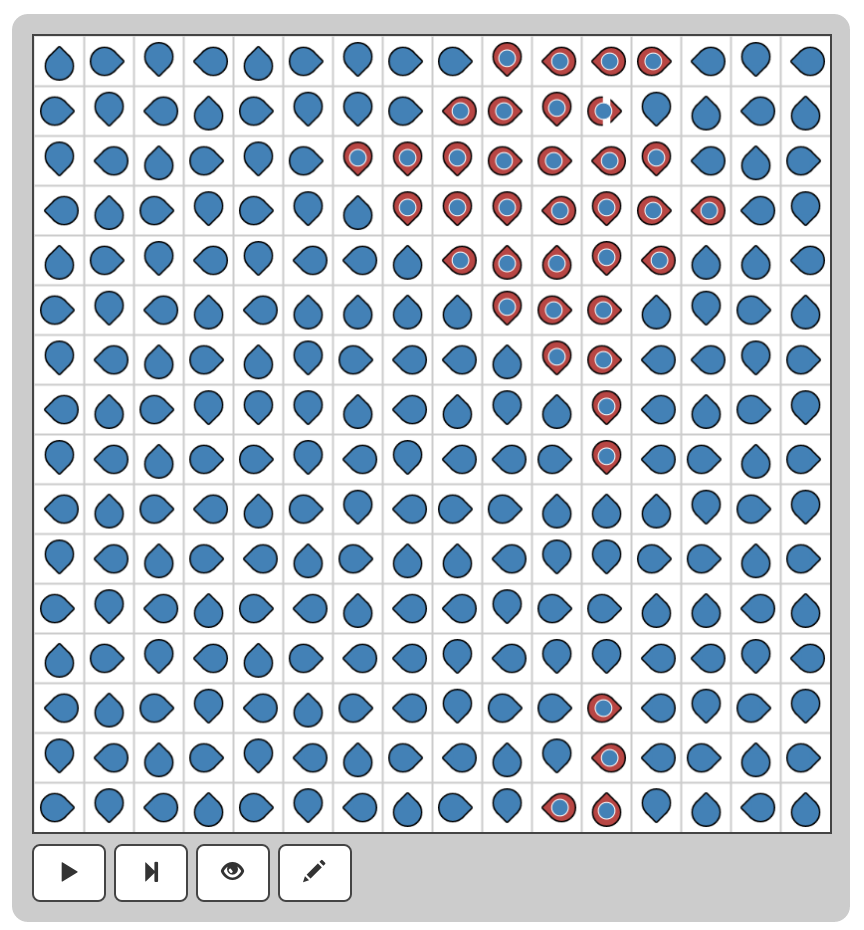
I loaded up two robots from the July Package, and placed them in the same starting position in both Robo Dojo and RoboCom.
Then, the simulations diverged between Robo Dojo and RoboCom.
TODO: explain how I know my semantics are correct
I investigated several changes to Robo Dojo to see if I could get the simulations to converge, but none of the changes worked.
Each bot is either mobile or immobile (i.e. whether or not it can execute the
move instruction).
The third parameter to the create instruction specifies whether or not the
child should be mobile:
Different instructions belong to different Instruction Sets.
There are three instruction sets:
Each bot has an instruction-set constant: $instrset
$instrset == 0, then the bot can only execute Basic instructions$instrset == 1, then the bot can execute Basic and Advanced instructions$instrset == 2, then the bot can execute all instructionsThe $instrset value is determined when the bot is created. See the
create instruction.
Each bot contains one or more banks.
The second parameter to the create instruction specifies how many banks
the child should have.
These will all be empty banks, which is to say every bank will have zero instructions.
At first glance, it might not seem possible that Prototype Virus 1 could end up infecting its own bots — since PV1 spreads its virus through bank 1 and PV1 operates out of bank 3.
A little debugging shows what happens:
TODO: link to debugging
bank main
if (forward cell is empty)
clone self
turn
else if (forward cell is an opponent)
infect the opponent with tapout malware
else if (forward cell is friendly)
disinfect friend
turn
bank self-destruct
self destruct
| Semantics | If the forward cell contains…
|
| Data types | a must be writable |
| Instruction set | Advanced |
| Number of cycles | 6 |
| Runtime exceptions | If the bot’s instruction set is less than Advanced, then the bot taps out. |
The move instruction tells the bot to move forward one cell.
It takes 18 cycles to execute; on the 18th cycle the bot attempts to move forward.
If the forward cell is occupied on the 18th cycle, then the move instruction
does nothing.
Bank Jumper taught us that we can’t get away with just attacking the first bank — since our opponent may be operating out of any bank.
So now let’s build a program that can defeat Bank Jumper variants operating out of any bank.
The idea is to fork Bank Jumper and replace its @foe routine with the
following pseudo code:
for (int i = 1; i <= 50; i++) {
transfer [empty bank] to bank i
if (forward cell does not contain opponent) {
break
}
}
The routine causes Data Hunger in the opponent, which causes the opponent to tap out.
To implement the new @foe routine, we need to learn the
add instruction.
Here is the complete program.
The July Package contains a corpus of 50 RoboCom Classic programs, released in 1998.
We selected a subset of these programs for out tournament, based on the following criteria:
Several programs appeared under different version numbers. For example, the package includes both Alien1.4 and Alien3.4/. For such program families, we only include the latest program (excluding the earlier programs in the family. )
Lastly, we excluded Activator5 because it fails to compile under Robo Dojo.
TODO: Explain failed compilation
When you click Compile, the board clears itself then uploads your program to a fresh bot, then randomly places the bot on the board.
Most writable parameters begin with #. The only exception is the writable
parameter %active.
#1 … #20 |
These local registers store arbitrary integer values |
#active |
This is a special register: setting #active to 0 or negative deactivates the bot. |
%active |
A reference to the forward bot’s #active register.
%active is the only remote parameter that is writable. Setting %active to 0 or negative
deactivates the forward bot. In contrast, setting %active to a positive value activates the forward bot. |
bank launcher ; 1
; LOOK HERE: jump to bank 3 to evade Super Diamond's attack
bjump 3,1
bank 2
bank main ; 3
@start
; Register #1 = "empty", or "opponent", or "friend"
scan #1
; if "opponent" goto @foe
; else goto @friend-or-empty
comp #1, 1
jump @friend-or-empty
jump @foe
@friend-or-empty
; if "friend" skip the follow create instruction
comp #1, 2
create 2,5,0
; LOOK HERE: Disinfect / initialize new bot
trans 1,1
trans 3,3
trans 4,4
trans 5,5
set %active, 1
turn 1
jump @start
@foe
comp #20, 0
jump @infect-with-virus
set #20, 1
trans 5,1
jump @restart
@infect-with-virus
; LOOK HERE: Transfer self-destruct malware to the opponent
set #20, 0
trans 4,1
@restart
; Make sure the opponent is active, so it can execute the foe bank
set %active, 1
jump @start
bank foe ; 4
trans 1,1
turn 1
bjump 3, 1
bank tapout; 5
tapout
For each program pairing, we ran a match under Robo Dojo and a match under RoboCom. A match consists of seven or more bouts — where a bout is a single program execution that ends once one color has been eliminated from the board, or the bout times out at 80,000 steps.
The results of a match are denoted A-B-C, where:
*, +, and - denote “unusual” matches.
* denotes an overtime match.
+ denotes an overtime match where overtime times-out after 14 bouts.
- denotes a match where the winners are different in Robo Com and Robo Dojo.
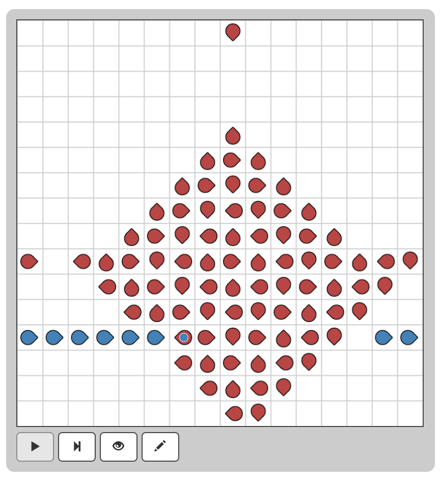
Notice the Red bot that has been infected by Blue.
Each bot is either mobile or immobile.
Parent bots determine whether their children are mobile or immobile.
The $mobile constant is 1 if the bot is mobile, and 0 if the bot
is immobile.
An immobile bot taps out if it attempts to move.
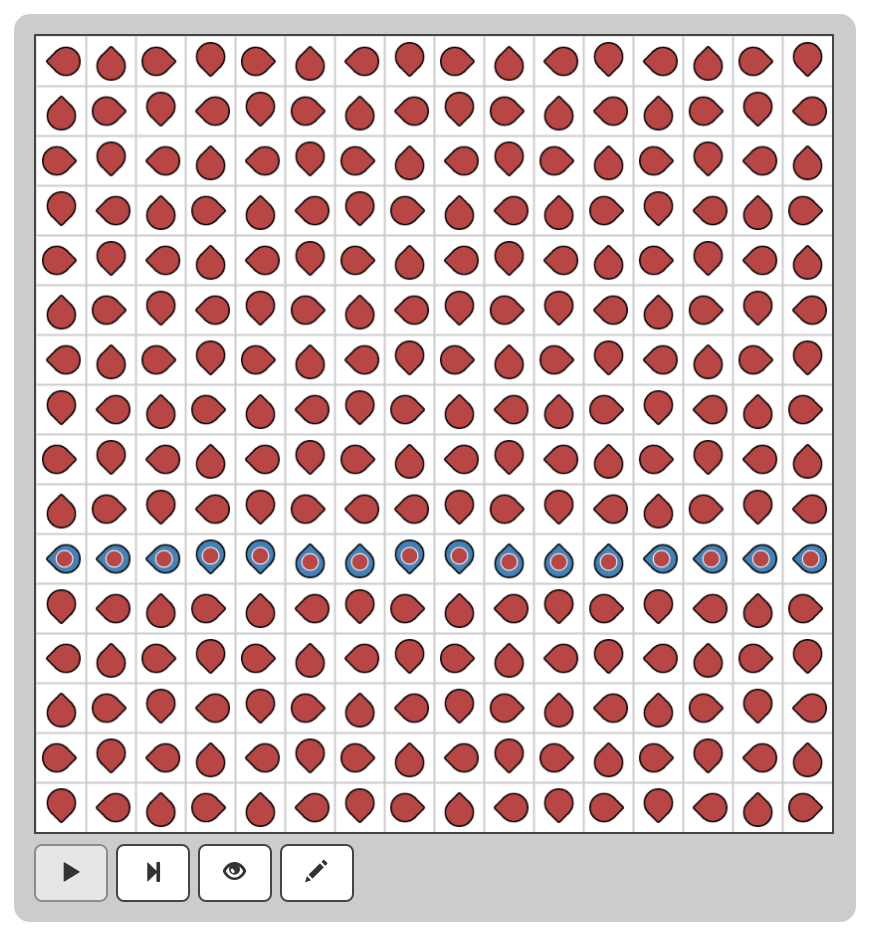

Blue is stuck because its frontier bots are infected with the virus.
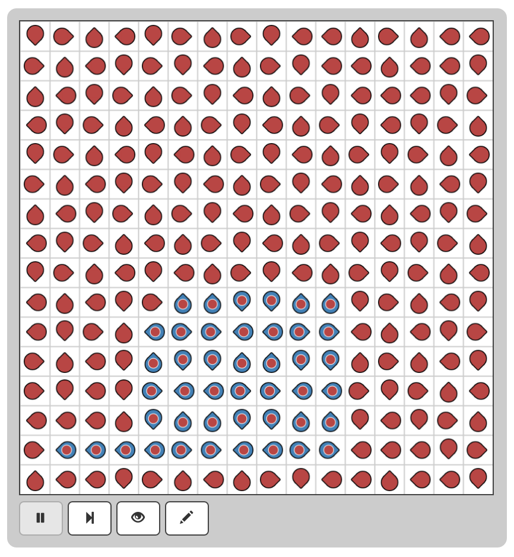
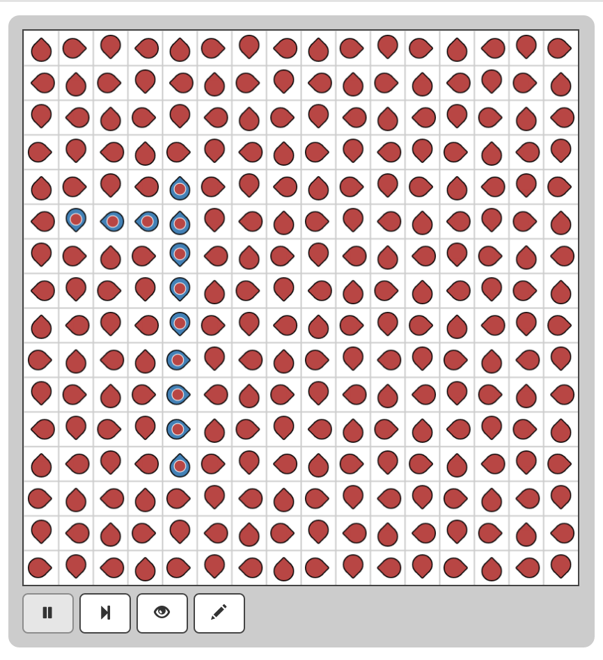
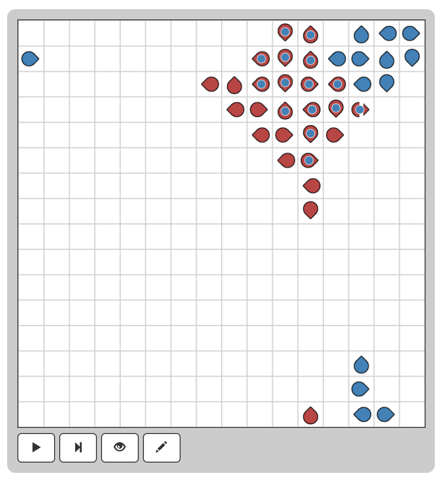
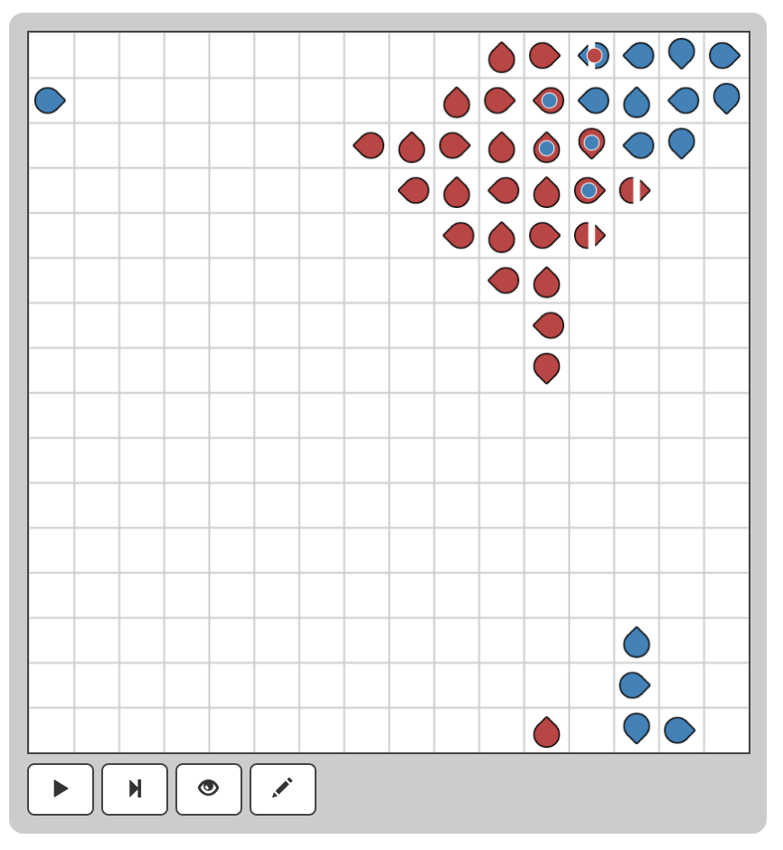
The virus begins to spread.
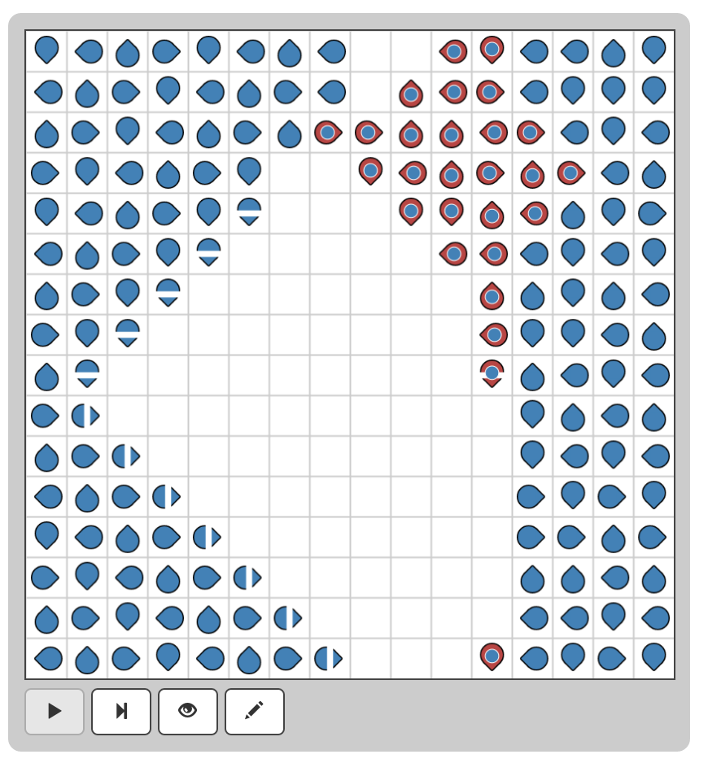
The Blue team appears to be closing in on Red.
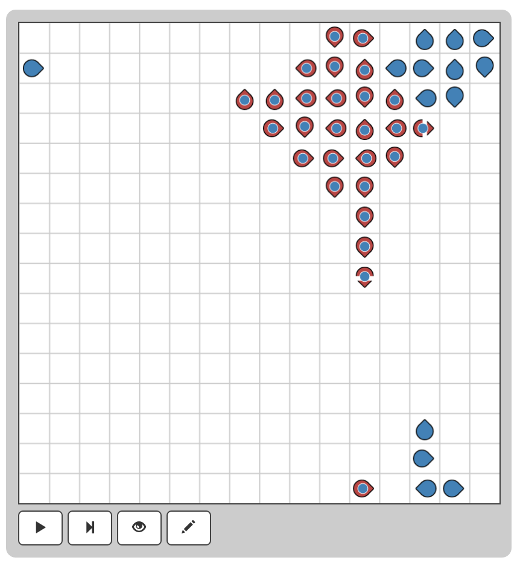
The Red team is completely infected with the virus.
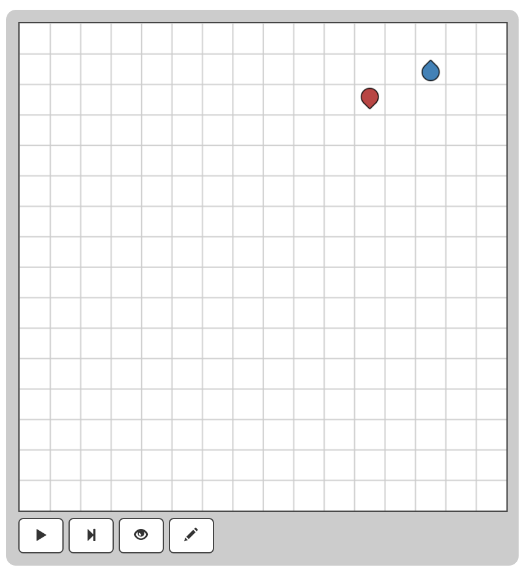
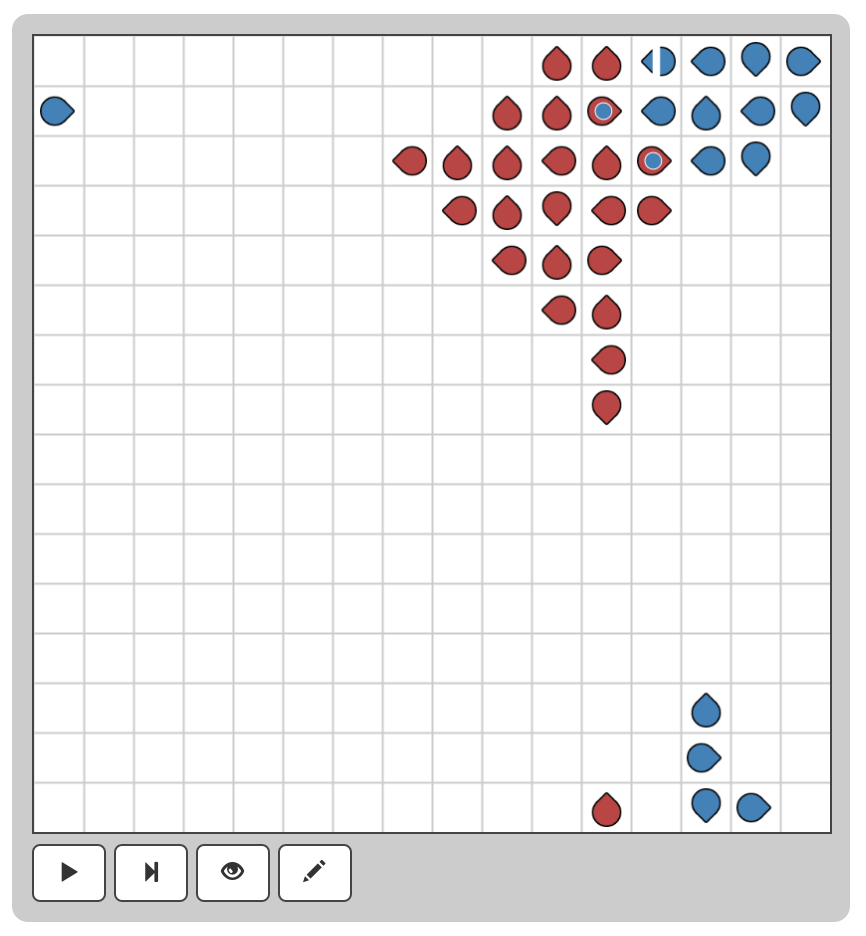
Blue infects two Red bots with the virus.
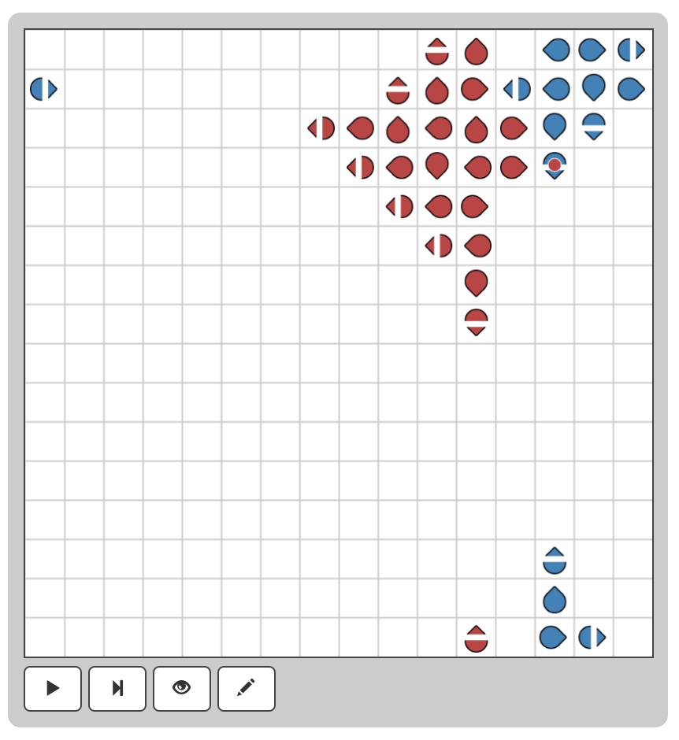
Blue and Red make contact.
TODO: Link to auto reboot

bank launcher ; 1
; LOOK HERE: jump to bank 3 to evade Super Diamond's attack
bjump 3,1
bank 2
bank main ; 3
@start
; Register #1 = "empty", or "opponent", or "friend"
scan #1
; if "opponent" goto @foe
; else goto @friend-or-empty
comp #1, 1
jump @friend-or-empty
jump @foe
@friend-or-empty
; if "friend" skip the follow create instruction
comp #1, 2
create 2,4,0
; LOOK HERE: Disinfect / initialize new bot
trans 1,1
trans 3,3
trans 4,4
set %active, 1
turn 1
jump @start
@foe
; LOOK HERE: Transfer self-destruct malware to the opponent
trans 4,1
; Make sure the opponent is active, so it can execute the foe bank
set %active, 1
jump @start
bank foe ; 4
trans 1,1
turn 1
You can include comments in your program with semicolons.
For example:
bank main ; bank #1
comp 1, #2 ; if #2 == 1, skip the next instruction
Example usage:
@foo
turn 1
move
jump @foo
The bot turns and moves in an endless loop.
An Auto Reboot is when a bot jumps to bank 1, instruction 1 due to a non-fatal error. There are four events that can lead to an Auto Reboot.
bjump jumps to a bank that couldn’t possibly exist
(such as bank 51), then the bot taps out.Every program is segmented into banks; every instruction belongs to exactly one bank.
For our hello-world program, our program has only one bank, which we have named the main bank.
When the simulation launches, each bot begins executing at the first instruction of the first bank of the program.
Adding a turn instruction to the Replication program builds a cluster of
bots in a diamond shape.
bank main
create 2,1,0
trans 1,1
set %active, 1
turn 1
In one board cycle, the selected bot becomes activated and executes one
cycle of the set instruction.
You might think that a bot shouldn’t be able to become activated and execute a bot-cycle in the same board-cycle, however these semantics are intentional.
I have investigated preventing bots from executing a cycle immediately after their activation, however this change did not effect convergence.
| Semantics | Sums a and b, then stores the result in a |
| Data types | a must be writable b can be any parameter |
| Instruction set | Basic |
| Number of cycles | 6 |
| Runtime exceptions | None |

The board is the 16 x 16 toroidal universe where bots play.
Each cell can hold only one bot at a time.
The board executes one step at a time.
During each board step, the board executes one cycle for each bot, in order from oldest bot to newest bot.
Whenever a bot reaches the end of its bank, the bot Auto Reboots — which means the bot’s execution starts over at the first instruction of the first bank.
In our Hello World program, Auto Reboot causes the bot to repeatedly execute the move instruction.
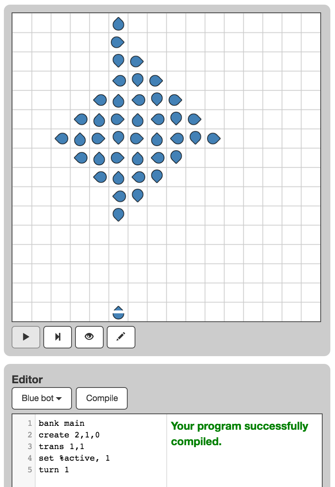
There are many events that can trigger an Auto Reboot.
Among them, if a bot executes a bjump instruction to a bank that doesn’t
exist, then the bot will Auto Reboot.
A bot reboots by jumping to the first instruction of the first bank.
If the first bank is empty, then the bot taps out from “Data Hunger.”
TODO: Link to Auto Reboot.
Up until now, minor timing issues haven’t played a role in the development of our programs. But viruses must be quick, in order to overwhelm disinfection.
We can develop a program that defeats Super Diamond, by forking Super Diamond and making a few small changes.
Basically, we use the bjump instruction to jump away from the first bank. Since Super Diamond attacks the first bank, it easily evades Super Diamond’s attack.
The Bank Jumper program looks like this.
In general, if you jump to arbitrary banks, its more difficult to attack you since the attacker doesn’t know which bank to hit. Of course, the attacker can target every bank, but that leads to a slower attack.
Let’s build a program that defeats the Diamond program.
The general idea is to infect Diamond bots with malware that causes the infected bots to “tap out” — i.e. exit the board.
The pseudo code for our Super Diamond program is straightforward and simple.
To implement it, we need to learn about registers and four new instructions:
Putting it all together, here is the Super Diamond program.
The battle should look something like this.
Typically, the create instruction requires at least several hundred cycles.
Super Diamond bots never have a third bank, so when they execute bjump 3,1
it causes a Auto Reboot, which results in the bot
restarting at bank 1.
Therefore, the new payload does not affect the way Super Diamond bots execute
the new virus payload (except for timing, since bjump takes up a few cycles).

We this because:
This is because every Red bot is more-or-less surrounded by other Red bots who are constantly propagating their Red banks. Thus, when a Red bot becomes infected, its neighboring Red bots disinfect the infected Red bot.
Each Blue bot has a Red circle inside it, which indicates each Blue bot is executing a bank that originated from Red’s program.
This happens because Red and Blue indiscriminately transfer their first bank to the bots in front of them.
So, when a Blue bot is infected with a Red bank, the Blue bot begins to turn as it reproduces, propagating Red’s bank along the way.
Through 8 case studies, this guide teaches you the essentials of Robo Dojo programming. This guide assumes you are already a programmer.
You can launch different-colored bots on the board, each color with a different program.
To edit the program for a color, select a color from the color editor drop-down menu.
For this experiment:
The result should look like this, or this, this, or maybe this.
The Red bots overwhelm the Blue bots, and infect them with Red’s code banks.
Sometimes Blue bots infect Red bots, but Red bots quickly disinfect themselves.

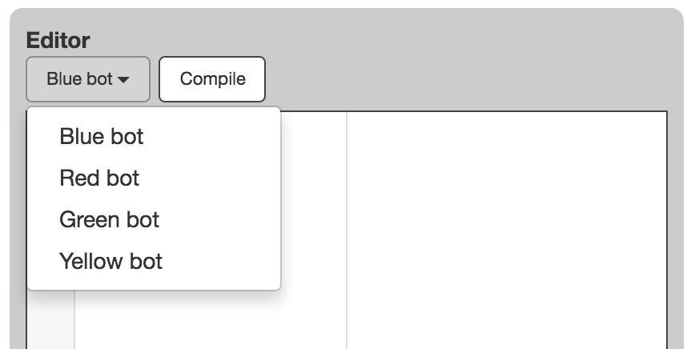
add #a, b adds #a and b together, then stores the result in #a.
sub #a, b subtracts b from #a, then stores the result in #a.
The following instructions are in the Basic Instruction Set:
RoboCom is no longer actively maintained but its website is archived here. Here’s a screenshot.
Robo Dojo only implements the “Original” instruction set from RoboCom.
Robo Dojo uses the “Classic” timing model from RoboCom.
I have strove to make the Robo Dojo simulation semantics identical to RoboCom — however I could not create a cycle-for-cycle duplicate of RoboCom.
Nevertheless, Robo Dojo and RoboCom have similar semantics.
Remote parameters refer to values in the forward bot.
If the remote cell is empty though, then every remote parameter yields the
value 0.
Every remote parameter begins with %.
There is only one writable remote parameter:
%active. The rest are read-only.
set %active, 1 sets the forward bot’s #active register to 1.set #3, %banks sets the local register #3 to the number-of-banks
in the forward bot. Or, sets #3 to zero if the forward cell is
empty.%active |
%active is the only remote parameter that is writable. Setting %active to 0 or negative
deactivates the forward bot. In contrast, setting %active to a positive value activates the forward bot. |
%banks |
The number of banks in the forward bot. |
%instrset |
The instruction set of the forward bot. 0 signifies
the Basic instruction set; 1 signifies the
Advanced instruction
set; 2 signifies the Super instruction set. |
%mobile |
0 if the forward bot is immobile; 1
if the forward bot is mobile. |
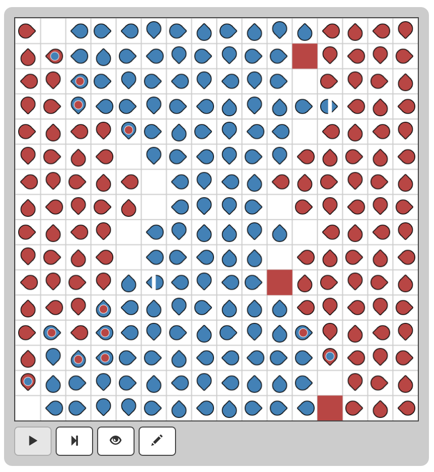
To see how closely Robo Dojo matches RoboCom semantics, I ran a Tournament of programs using programs from the July Package.
The results show that Robo Dojo semantics are similar to RoboCom semantics: of the 38 matches in the tournament, Robo Dojo and RoboCom produced different victors only four times.
| Semantics |
On its final cycle:
|
| Data types | iset, banks, & mobile can be any parameter |
| Instruction set | Super |
| Number of cycles |
(50 + 20 * banks) * (if (mobile == 1) 2 else 1) + (if (iset == Advanced) 40 else 0) + (if (iset == Super) 80 else 0) |
| Runtime exceptions |
The parent bot taps out if any of the following events occur:
|
| Semantics | During its final cycle, if the forward cell is empty, the bot moves into that cell. Otherwise, the instruction does nothing. |
| Data types | N/A |
| Instruction set | Basic |
| Number of cycles | 18 |
| Runtime exceptions | None |
It usually takes at least several hundred cycles to create a new bot.
On the other hand, it only takes several tens of cycles to infect a bot with a small code bank.
So, commandeering a bot is more efficient than creating a bot by an order of magnitude.
Every bot can remotely access its forward bot’s data to a limited extent.
The key is using remote parameters.
For example, a bot can obtain the number of banks in the forward bot, by
using the %banks parameter.
If an instruction attempts to read a remote value, but the forward cell is empty, then the remote value is read as zero.
Every instruction requires a certain number of cycles to execute.
When an instruction accesses a remote parameter (either reading or writing) then the instruction takes longer to execute.
Specifically, the number of required cycles increases by 8 for every
remote parameter that is accessed.
s


The comp a, b instruction compares a and b.
If a and b are equal, then the following instruction is skipped.
Otherwise, the following instruction is executed as normal.
comp #1, 0
turn 1
move
If #1 == 0, then the bot does not turn.
Otherwise, the bot does turn.
move instruction belongs to the Basic instruction setcreate instruction belongs to the Super instruction set| Semantics | If a is a label, then jump to the first instruction that appears after that label. Otherwise (if a is an integer), then jump a instructions forward or backward (depending on if a is positive or negative). For example, if a is 3, then jump to the third instruction that appears after the jump instruction. |
| Data types | a can be any parameter. Also, it can be a label. |
| Instruction set | Basic |
| Number of cycles | 2 |
| Runtime exceptions | If the instruction jumps out of bounds (i.e. out side of its bank), then an Auto Reboot happens, possibly leading to Data Hunger. |
The problem is at least twofold:
Here is one example of mysterious RoboCom semantics.
To execute an instruction, the bot must execute one or more cycles for the instruction.
For example, the move instruction requires 18 cycles.
During the 18th cycle, the move instruction will actually execute.
Before the 18th cycle, the move instruction does nothing.
See also
Say Bot X is some bot on the board.
Relative to Bot X, the term forward cell refers to the cell directly in front of Bot X.
If there is a bot in that cell, it is referred to as the forward bot.
Since bank 3 is the main bank for PV2 bots, when a PV2 bot executes the virus payload it causes the PV2 bot to resume its execution as normal.
The turn instruction takes one parameter.
The scan instruction looks at the cell in front of the bot.
scan variable sets variable to either 0, 1, or 2, depending on what is
in front of the bot.
variable = 0 if the front cell is emptyvariable = 1 if the front cell contains an opponentvariable = 2 if the front cell contains a friendscan #1 sets #1 to either 0, 1, or 2.
We this because:

The create instruction builds a new bot in front of the builder.
There are three parameters:
The create instruction is the slowest instruction.
During the create instruction’s last cycle, if the forward cell is empty, then
the child will be created in front of the parent. The child bot will have empty
banks and will be “inactive” (which is why
we need to execute the trans and set instructions after create).
Thus, create 2,1,0 creates an immobile bot with the Super instruction set and
one empty bank.
The set instruction assigns a value to a variable.
There are two parameters:
Thus, set %active, 1 assigns the value 1 to the variable %active.
%active is a special variable: setting it to 1 (or greater)
causes the forward bot to become activated.
TODO: Link to article on variables and constants
We are going to fork Bank Jumper, and modify it to use a virus to defeat Super Diamond.

The following instructions are in the Advanced Instruction Set:
The bjump instruction jumps from one bank to another.
It takes two parameters:
bank one
bjump 3, 1
bank two
bank three
move
This causes the bot to jump to the first instruction of the third bank.